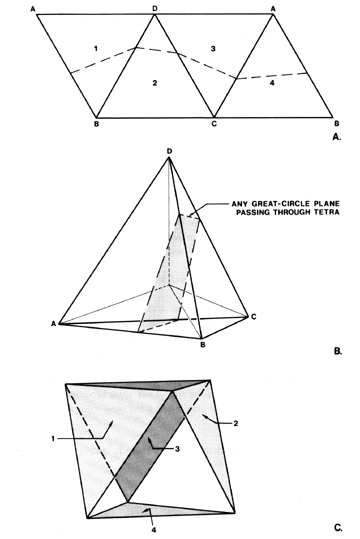

|  |
| Figs. 1238.26A. B, C: In this plane net of four hinged
triangles the dotted line indicates the intersection
of a great-circle plane passing through the assembled
tetra.
Four edge-bonded triangles of the tetra with great-circle plane passing through. The same four triangles may be vertex-bonded to describe an octahedron with alternate open and closed faces. |